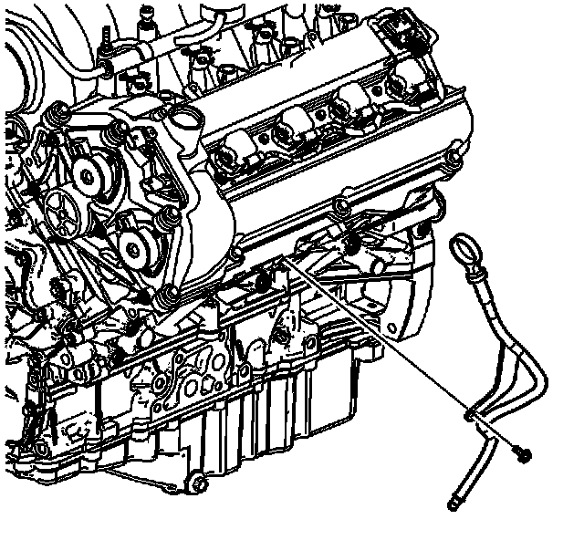

Engine Oil Dip Stick - Dip Stick Tube: Service and Repair
Oil Level Indicator and Tube Replacement
Removal Procedure

1. Remove the oil level indicator.
2. Loosen the oil level indicator tube bolt.
3. Pull the oil level indicator tube from the crankcase.
Installation Procedure
1. Replace the oil level indicator tube O-ring.
2. Install the oil level indicator tube.
Notice: Refer to Fastener Notice (Fastener Notice) .
3. Install the oil level indicator tube bolt.
Tighten the oil level indicator tube bolt to 10 N.m (89 lb in).
4. Install the oil level indicator.